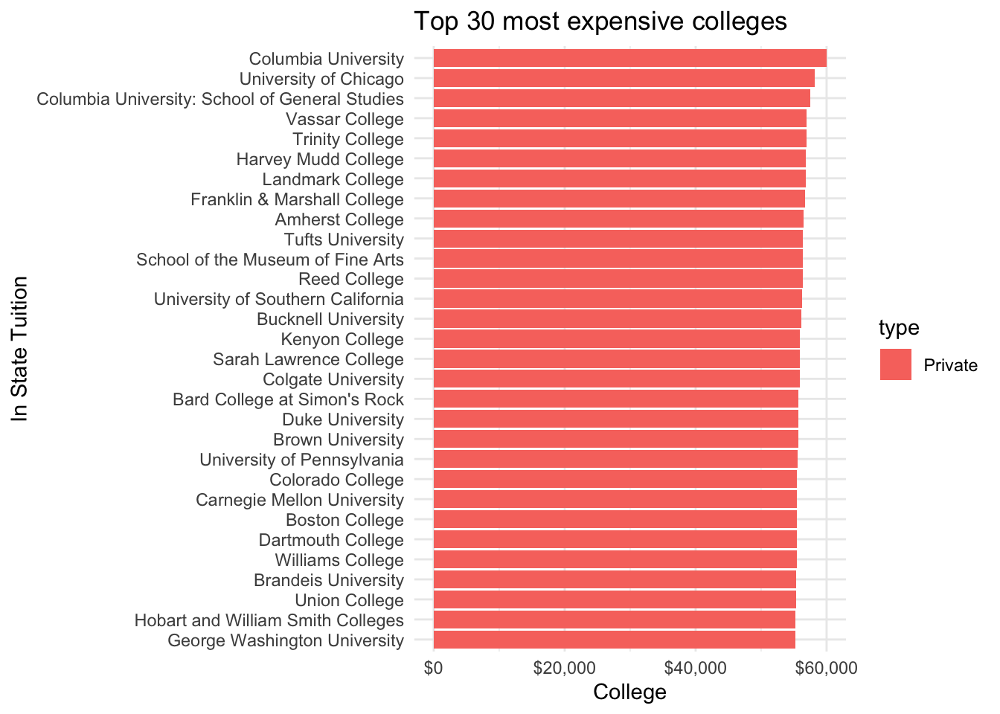
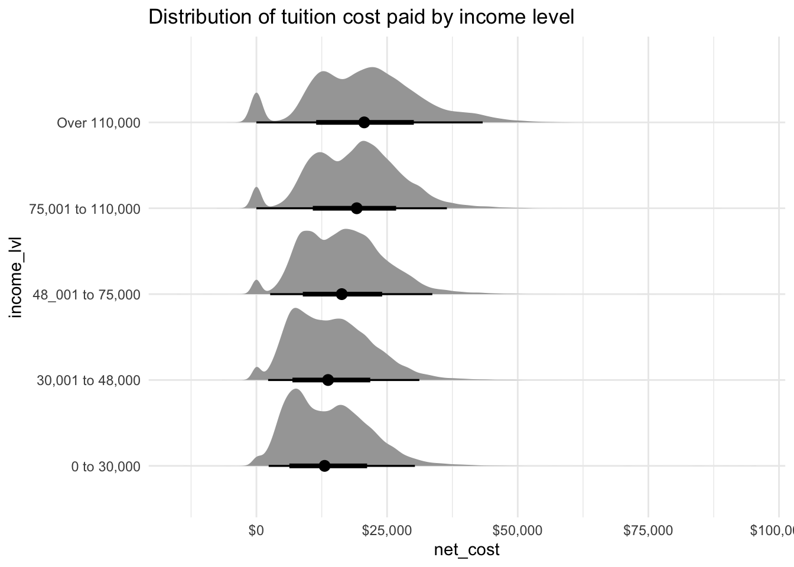
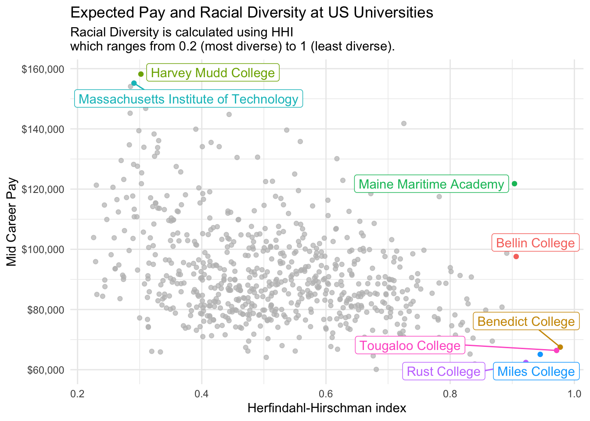

Warning: package 'tidybayes' was built under R version 4.1.2
theme_set(theme_minimal())
tuesdata <- tidytuesdayR::tt_load(2020, week =11)
--- Compiling #TidyTuesday Information for 2020-03-10 ----
--- There are 5 files available ---
--- Starting Download ---
Downloading file 1 of 5: `diversity_school.csv`
Downloading file 2 of 5: `historical_tuition.csv`
Downloading file 3 of 5: `salary_potential.csv`
Downloading file 4 of 5: `tuition_cost.csv`
Downloading file 5 of 5: `tuition_income.csv`
--- Download complete ---
This weeks data consists of tuition costs, salary potential and diversity information of US colleges. This includes 2 year colleges which offer associate degrees, certificates and diplomas and 4 year colleges which offer bachelors and masters degrees. These are further split by private institutions, public and for profit. Additionally, Universities in the US charge different tuition fees for in-state or out-of-state students. Also, the ticket price is not always reflective of the students costs. The fees can be wholly or partially subsidised by scholarships and financial aid.
The first question which I wanted to answer is which universities have the highest tuition cost and what type of institution are they.
tuition_cost <- tuesdata$tuition_costtuition_cost %>%top_n(30, wt = in_state_tuition) %>%mutate(name = forcats::fct_reorder(name, in_state_tuition)) %>%ggplot(aes(x = name, y = in_state_tuition, fill = type)) +geom_col() +coord_flip() +scale_y_continuous(labels = scales::dollar_format()) +labs(title ="Top 30 most expensive colleges") +ylab("College") +xlab("In State Tuition")

tidybayes can be used to plot the distribution of in state costs and out of state costs.
Another dataset contains the historical tuition values in adjusted US dollars. We can see that private and public tuitions have doubled for four year courses since 1985. It’s quite a lot more expensive to attend college in the US now than it was 35 years ago!
To quantify the most cost effective university to attend, divide the mid career pay by the total tuition paid for a 4-year degree (bachelors or masters degree).
Using tidybayes again to view the distribution of the net-costs by income bracket. The data has a peak at zero for those receiveing full scholarships. Interesting they seem most prevelant for those with an income over £110,000!
tuesdata$tuition_income %>%ggplot(aes(y = income_lvl, x = net_cost)) +stat_halfeye() +scale_x_continuous(labels = scales::dollar_format()) +labs(title ="Distribution of tuition cost paid by income level")

Diversity of top 20 Forbes Colleges
To create a chart of diversity such as that on the priceonomics blog I took the top 20 colleges according to Forbes from wikipedia. I copied the table to an R tribble using data pasta.
top_unis <- tibble::tribble(~name, ~ranking,"Harvard University", 1,"Stanford University", 2,"Yale University", 3,"Massachusetts Institute of Technology", 4,"Princeton University", 5,"University of Pennsylvania", 6,"Brown University", 7,"California Institute of Technology", 8,"Duke University", 9,"Dartmouth College", 10,"Cornell University", 11,"Pomona College", 12,"University of California, Berkeley", 13,"Columbia University", 14,"Georgetown University", 15,"University of Chicago", 16,"Northwestern University", 17,"University of Notre Dame", 18,"Rensselaer Polytechnic Institute", 19,"University of Michigan", 20 )
The Herfindahl-Hirschman index is used as a measure of diversity at each college. The general formula is:
\[HHI = \sum_{i=1}^Na^2_i\]
Where \(a_i\) represents the proportion of the \(i^{th}\) race and \(N = 5\) consisting of the number of races under consideration: White, Black, Hispanic, Asian and other. So for a completely homogeneous population \(a_1 = 1\) and \(a_{2:5} = 0\), hence \(HHI = 1^2 + 0^2 + 0^2 + 0^2 + 0^2 = 1\). The following plot shows the Forbes top 20 univesities ordered by diversity according to the HHI.
The next plot considers diversity as measured by HHI against potential earnings at mid career. This is the plot I chose to tweet for tidy tuesday.
racial_diversity %>%inner_join(salary, by =c("name")) %>%distinct(name, hhi, mid_career_pay) %>%ggplot(aes(x = hhi, y = mid_career_pay, colour = name)) +geom_point() +gghighlight(mid_career_pay >1.55e5| hhi >0.9, use_direct_label =TRUE) +scale_y_continuous(labels = scales::dollar_format()) +labs(title ="Expected Pay and Racial Diversity at US Universities",subtitle ="Racial Diversity is calculated using HHI\nwhich ranges from 0.2 (most diverse) to 1 (least diverse).") +ylab("Mid Career Pay") +xlab("Herfindahl-Hirschman index")
Warning: Using `across()` in `filter()` is deprecated, use `if_any()` or
`if_all()`.
label_key: name

# ggsave("diversity.png")
Tweet
Now use the rtweet library to post the plots directly to Twitter without leaving R. You must connect to the Twitter API using OAuth as described in this vignette, I set the Twitter application keys in my .Renviron file which is never committed to public version control (this can be easily edited using usethis::edit_r_environ()).
The function post_tweet can be used to post a new tweet.
post_tweet(status ="This week's #TidyTuesday features diversity, tuition costs and expected salaries at US universities. It appears more diverse colleges tend to have higher earning graduates. #rstats",media =c("diversity.png", "carbon.png"),token = token)
Citation
BibTeX citation:
@online{law2020,
author = {Jonny Law},
title = {Tidy {Tuesday:} {US} {Tuition} {Data}},
date = {2020-03-10},
langid = {en}
}
For attribution, please cite this work as:
Jonny Law. 2020. “Tidy Tuesday: US Tuition Data.” March 10,
2020.